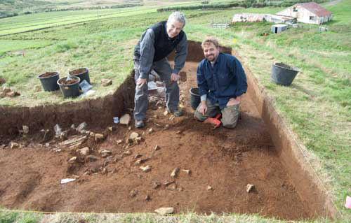
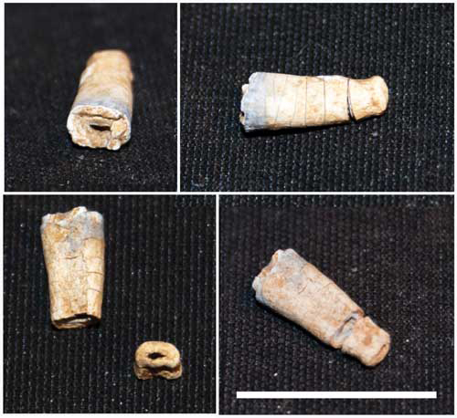
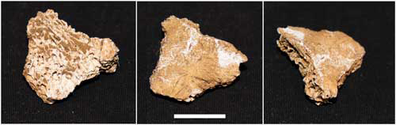

Archaeological Field Work | 2012 Field Season - Hulduhóll Cremation Grave Excavation
In 2012 we revisited the Hulduhóll cremation site in order to extend the excavation area and excavate the remainder of the disperse cremation deposit. Review of the results from the 2001-2003 seasons suggested that revisiting this site would be fruitful. Particularly interesting was a charcoal layer observed extending to the east of the excavation area. We hoped that opening a wider excavation exposure on the knoll would reveal the full extent of the cremation layers and solidify stratigraphical relationships with any surrounding archaeological deposits. The wider excavation area would also show the connection between the cremation deposit in the center of the knoll and any possible modifications of the knoll along the slopes to the north and south. We sought also to recover additional pieces of cremated human bone scattered further than the center of the feature excavated in 2001-2003. This proved very successful with the recovery of five additional human bone fragments: 1 tooth, 3 vertebral fragments, and 1 piece of a skull. Significant here is the recovery of a deciduous tooth, which shows that at least 2 individuals were cremated. This data has significant implications for our understanding of pre-Christian religion and burial practices, particularly since this is the first cremation discovered in Iceland.
 Jesse Byock and Davide Zori after removing of the cremation layer in 2012.
  Human cremated bone from the 2012 excavation. A total of five separate new pieces of human bone were recovered during the 2012 season. One skull fragment and two human vertebral fragments were recovered in Context 6. Context 11 yielded one vertebral joint. The single human deciduous tooth was found in Context 12.